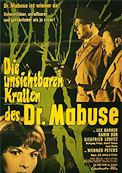
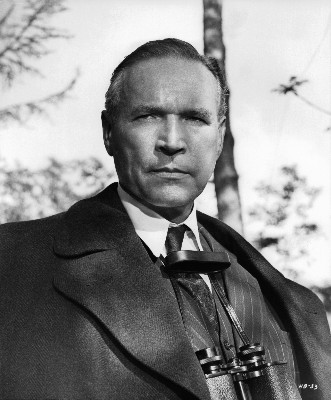

#12128 Die Dr. Mabuse 3 - Unsichtbaren Krallen des Dr. Mabuse
Alternativ: The Invisible Dr. Mabuse (Englischer Titel)
 
 IMDB-Wertung: 5.6 / 10
IMDB-Wertung: 5.6 / 10  Metascore: 0
Metascore: 0 
Strange things happen in a revue theatre. The dancer Maria seems to be hunted by an invisible admirer. When the body of a probable FBI agent is found in a trunk the police asks FBI man Joe Como for help. Como gets interested in the revue theatre and an ominous transport firm soon. When he is receiving mysterious threatening letters he is sure that Dr. Mabuse has risen again. But what is going on at "Enterprise X" so that both the goverment and the mad genius in crime are interested in it?
Jahr: 1962
Dauer: 89 Minuten
FSK: 12
Land: West-Deutschland Studio: Omnia Deutsche Film-ExportTonspuren:
Untertitel:
Auflösung: 1080p (1792x1080) Größe: 6707 MB
Genre: Horror, Drama, Sci-Fi, Krimi, Mystery
Regisseur: Harald Reinl
Drehbuch: Ladislas Fodor, Artur Brauner, Norbert Jacques
Soundtrack: Peter Sandloff
Darsteller:
 Lex Barker als FBI-Agent Joe Como
Lex Barker als FBI-Agent Joe Como Karin Dor als Liane Martin
Karin Dor als Liane Martin- Siegfried Lowitz als Kommissar Brahm
- Rudolf Fernau als Professor Erasmus
-  Wolfgang Preiss als Dr. Primarius Krone / Dr. Mabuse
 Werner Peters als Clown Bobo / Martin Droste
Werner Peters als Clown Bobo / Martin Droste- Carl de Vogt als Empfangschef
- Zeev Berlinsky als Mann im Leichenschauhaus
- Georg Thomalla als Kriminalbeamter Hase (uncredited)
- Harry Wüstenhagen als Clown Bobo (uncredited)
- Kurd Pieritz als Dr. Bardorf
- Walter Bluhm als Portier
- Hans Schwarz Jr. als Max
- Walo Lüönd als Kriminalbeamter Hase
- Heinrich Gies als Optiker
- Alain Dijon als Nick Prado
- Gert Günther Hoffmann als FBI Agent Joe Como (uncredited)
Datei: X:\6-Hexalogie(A-Z)\Dr. Mabuse\Dr. Mabuse 3 - Unsichtbaren Krallen des Dr. Mabuse, Die (1962, FSK12, 1792x1080).mkv seit 11.12.2019
Festplatte: HD Collection-3(N-Z)-6(A-Z)
 Es gibt insgesamt 9 Filme in der Gruppe '6-Hexalogie(A-Z)\Dr. Mabuse'
Es gibt insgesamt 9 Filme in der Gruppe '6-Hexalogie(A-Z)\Dr. Mabuse'